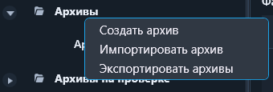
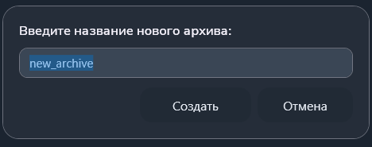
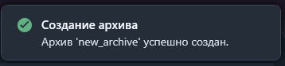

Функция «Создать архив»
Функция создаёт новый архив программ контроля в хранилище программы.
Путь и вызов
Нахождение в программе
Верхнее меню → "Архив" → "Создать архив"Команда доступна, когда открыто и активно рабочее окно архивов. Её также можно вызвать из контекстного меню корневого узла «Архивы».

Создание архива
- Выберите команду «Создать архив».
- Введите уникальное имя нового архива.
- Нажмите кнопку «Создать».

После успешного создания программа добавит архив в дерево и покажет уведомление.
